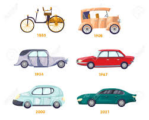
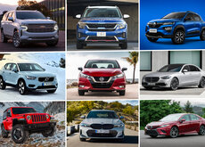
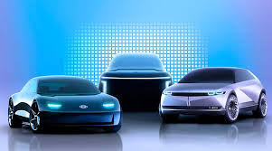
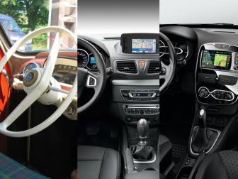

Historia de los Autos
Los autos han sido una de las invenciones más revolucionarias de la era moderna. Desde los primeros modelos a finales del siglo XIX hasta los vehículos eléctricos y autónomos de hoy en día, la industria automotriz ha evolucionado de manera sorprendente. Los avances en tecnología, diseño y eficiencia energética han transformado por completo la forma en que nos movemos y experimentamos el mundo a nuestro alrededor.
Tipos de Autos
Dentro del amplio mundo de los autos, existen diversas categorías y segmentos que satisfacen las necesidades y preferencias de los conductores. Desde los compactos y eficientes citadinos, pasando por los todoterrenos robustos y los deportivos emocionantes, hasta llegar a los lujosos y elegantes vehículos de alta gama. Cada tipo de auto tiene sus propias características y ofrece una experiencia de manejo única.
Innovación y Tecnología
La industria automotriz está a la vanguardia de la innovación tecnológica. Sistemas de asistencia al conductor, motores más eficientes, conectividad avanzada y la creciente incorporación de la conducción autónoma son solo algunas de las tendencias que están transformando la forma en que interactuamos con nuestros vehículos. Estas innovaciones no solo mejoran la seguridad y el confort, sino que también contribuyen a un futuro más sostenible.
Experiencia de Conducción
Más allá de ser simples medios de transporte, los autos ofrecen una experiencia de conducción única y emocionante. Desde el placer de recorrer sinuosas carreteras hasta la satisfacción de dominar un vehículo deportivo, cada modelo y marca tiene su propia personalidad y carácter. Los entusiastas del mundo automotriz disfrutan de la emoción, la adrenalina y la conexión que se establece entre el conductor y su vehículo.
